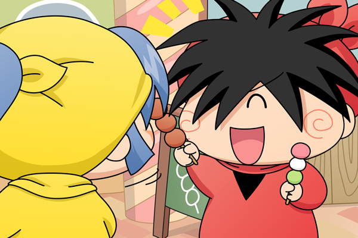

ヤマネ「ヤシチ兄様は大人のきれいな女性がタイプなので
ございますね」
ヤマネはそう言いながら、下を向いて自分の小さな体を眺めました。
ヤマネ「それに比べて私は・・・。
私のような地味で小さな体では、ヤシチ兄様のお目には
かなわないのでしょうか。
・・・あれ？ヤシチ兄様？」
ヤマネは一人はぐれてしまいました。

きょろきょろ探すと後ろからヤマネを呼ぶ声が聞こえました。
ヤシチ「いつの間にかいなくなっていたから、拙者がヤマネの分も
もらってきてやったぞ！
しょう油のお団子ならヤマネも大丈夫だろう？」
ヤマネ「申し訳ございません・・・」
ヤシチ「それにしてもお団子の無料配布が行われているとは・・・。
今日の拙者たちはとってもツイているのだ！
これも日頃の行いが良いからだな。あーはっはっはーっ」
ヤマネ「ヤシチ兄様」
ヤシチ「ん？どうした、ヤマネ？」
ヤマネ「ヤマネは・・・ヤマネはもっとおしゃれをして、女性らしさに
磨きをかけた方が良いのでございましょうか？」
ヤシチ「う～ん。
いや、ヤマネは今のままで良いと思うぞ」
三色団子を食べながら、ニコニコした表情でヤシチは言いました。
前回の街のシーンの続きです。前回はヤマネが空気のような存在でしたが、今回からヤマネ視点でストーリーを進めていきます。逆にサスケ＆ハンゾーの方は今回はお休み…少し離れた場所で二人で仲良くお団子を食べているというシーンとさせてください(^^;。次回からもっとヤマネを活躍(?)させますのでお楽しみに～。
(2009/6/25)